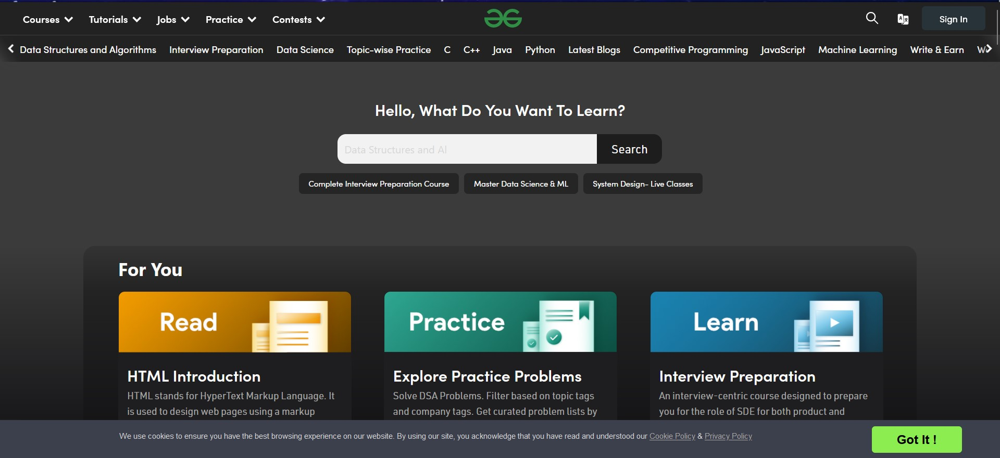

This website is a project for ITMD 361: Fundamentals of Web Development. There are three pages contained within this site, that will be described further below. The About page (current), the Resume page, and the Who I am page.
The About Page is the home page of this website. It contains relevant information about the web pages, as well as information related to learning HTML and creating your own GitHub web page.
The Resume Page contains professional information about me, William Malak, and my past experiences, whether they are projects or positions.
The Who I am Page is a page that centers around information about me outside of my work experiences. Examples: Hobbies, where I come from, etc.
From personal experience, one of my favorite resources when learning anything related to coding is GeeksforGeeks. They are a reliable source of information and explanations about many different topics that are relevant to CS and ITM students. The link above is to a page that can introduce those unfamiliar with using HTML to the concept.
One of the best ways to get into creating websites is to create your first webpage. One of the best resources to do so is using GitHub. GitHub is a platform for keeping an organized repository of code for any project. It can be a bit difficult to use when you are new to the tool, so it is good to look at tutorials like the guide to create a repository and how to create a live website page. It is also possible, and sometimes preferential, to find a video that demonstrates how to do these things, like the following video: